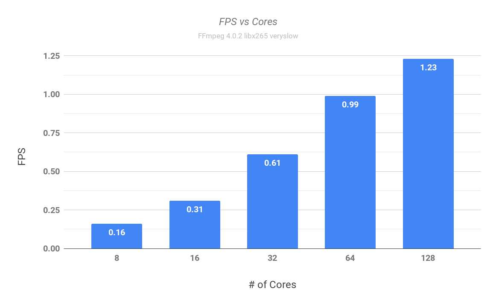
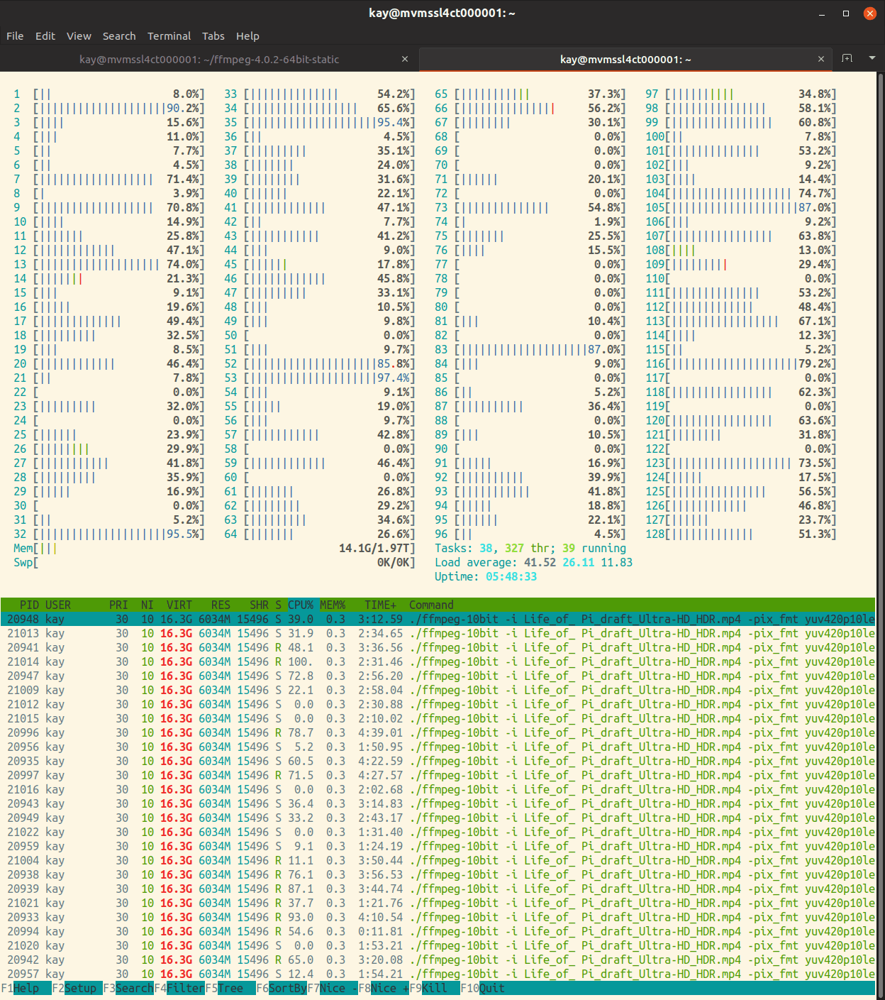

Video encoding has always been a fairly compute intensive task. With every new generation of video encoders, more computational power has been required to achieve the compression benefits. HEVC/H.265 is the latest state of the art video compression standard with x265 being the most popular open-source encoder used for encoding into the HEVC/H.265 format. In comparison to AVC/H.264 (the previous state of the art encoding format), HEVC offers about double the data compression ratio at the same level of video quality, or substantially improved video quality at the same bit rate.
To achieve the increased compression, the x265 encoder also requires more processing power than the x264 encoder. Throwing more CPU cores at this problem usually provides a linear gain in the encoding speed. However, in the consumer CPU space we’ve been limited to 4-6 cores for almost a decade now. Intel first introduced a Quad core CPU in 2006, followed by a 6 core CPU in 2010. Only recently in the last few years have we seen the introduction of 8+ core CPUs in the consumer space. With the recent introduction of AMD 16 & 32 core Threadripper CPUs and the competing announcements from Intel, we’re seeing a resurgence of competition in the multi-core space. It is a very exciting time to be a hardware enthusiast with the return of AMD to high-end CPU market! :)
Azure M-series VMs
While these 16 & 32 core parts might be out of the reach of many consumers due to their price, it is still interesting for me to test how current x265 encoder scales with a large number of cores. With a cloud like Microsoft Azure, it’s very easy to spin up a VM with many cores to complete this test. For this test, I’m going to be using the Azure M-series VMs. As of August 2018, M-series offers the largest VM in Azure with up to 128 cores.
Here are the important specs on the M-series VMs:
| Size | vCPU | Memory: GiB |
|---|---|---|
| Standard_M8ms | 8 | 218.75 |
| Standard_M16ms | 16 | 437.5 |
| Standard_M32ms | 32 | 875 |
| Standard_M64ms | 64 | 1,792 |
| Standard_M128ms | 128 | 3,892 |
Here is the lscpu output from the Standard_M128ms VM
kay@mvmssl4ct000001:~$ lscpu
Architecture: x86_64
CPU op-mode(s): 32-bit, 64-bit
Byte Order: Little Endian
CPU(s): 128
On-line CPU(s) list: 0-127
Thread(s) per core: 2
Core(s) per socket: 16
Socket(s): 4
NUMA node(s): 4
Vendor ID: GenuineIntel
CPU family: 6
Model: 63
Model name: Intel(R) Xeon(R) CPU E7-8890 v3 @ 2.50GHz
Stepping: 4
CPU MHz: 2493.989
BogoMIPS: 4988.10
Virtualization: VT-x
Hypervisor vendor: Microsoft
Virtualization type: full
L1d cache: 32K
L1i cache: 32K
L2 cache: 256K
L3 cache: 46080K
NUMA node0 CPU(s): 0-31
NUMA node1 CPU(s): 32-63
NUMA node2 CPU(s): 64-95
NUMA node3 CPU(s): 96-127
Flags: fpu vme de pse tsc msr pae mce cx8 apic sep mtrr pge mca cmov pat pse36 clflush mmx fxsr sse sse2 ss ht syscall nx pdpe1gb rdtscp lm constant_tsc rep_good nopl xtopology cpuid pni pclmulqdq vmx ssse3 fma cx16 pcid sse4_1 sse4_2 movbe popcnt aes xsave avx f16c rdrand hypervisor lahf_lm abm invpcid_single pti tpr_shadow vnmi ept vpid fsgsbase bmi1 hle avx2 smep bmi2 erms invpcid rtm xsaveopt
Test setup
- Ubuntu 16.04 LTS
- Intel(R) Xeon(R) CPU E7-8890 v3 @ 2.50GHz (Azure M-series VMs in the table above)
- FFmpeg 4.0.2 64-bit static build
- Test file - Life of Pi Ultra HD HDR sample (54s)
Mediainfo
Here are the media details of the test sample
kay@mvmssl4ct000001:~/ffmpeg-4.0.2-64bit-static$ mediainfo Life_of_\ Pi_draft_Ultra-HD_HDR.mp4
General
Complete name : Life_of_ Pi_draft_Ultra-HD_HDR.mp4
Format : MPEG-4
Commercial name : HDR10
Format profile : Base Media
Codec ID : isom (isom/iso2/mp41)
File size : 293 MiB
Duration : 54 s 422 ms
Overall bit rate mode : Variable
Overall bit rate : 45.1 Mb/s
Writing application : Lavf56.15.103
Video
ID : 1
Format : HEVC
Format/Info : High Efficiency Video Coding
Commercial name : HDR10
Format profile : Main 10@L5.1@High
Codec ID : hev1
Codec ID/Info : High Efficiency Video Coding
Duration : 54 s 375 ms
Bit rate : 44.8 Mb/s
Width : 3 840 pixels
Height : 2 160 pixels
Display aspect ratio : 16:9
Frame rate mode : Constant
Frame rate : 24.000 FPS
Original frame rate : 23.976 (24000/1001) FPS
Color space : YUV
Chroma subsampling : 4:2:0 (Type 2)
Bit depth : 10 bits
Bits/(Pixel*Frame) : 0.225
Stream size : 290 MiB (99%)
Writing library : ATEME Titan KFE 3.7.0 (4.7.0.2002)
Color range : Limited
Color primaries : BT.2020
Transfer characteristics : PQ
Matrix coefficients : BT.2020 non-constant
Mastering display color primaries : Display P3
Mastering display luminance : min: 0.0200 cd/m2, max: 1200 cd/m2
FFmpeg command used
I used the 10-bit version of FFmpeg to encode the file to a HDR compatible output. Very slow preset was used to ensure the most CPU intensive parameters were used (outside of the placebo preset :) ).
kay@mvmssl4ct000001:~/ffmpeg-4.0.2-64bit-static$ ./ffmpeg-10bit -i 'Life_of_ Pi_draft_Ultra-HD_HDR.mp4' -pix_fmt yuv420p10le -profile:v main10 -c:v libx265 -crf 21 -preset veryslow -x265-params 'no-strong-intra-smoothing=1:no-sao=1:deblock=-2\:-2:colorprim=bt2020:transfer=smpte2084:colormatrix=bt2020nc:range=limited:master-display=G(13250,34500)B(7500,3000)R(34000,16000)WP(15635,16450)L(40000000,50):max-cll=1200,0.0200' -an vslow_crf21.mp4
Results

Looking at the results above, we see that the time taken to complete the encode decreases nearly linearly until 32 cores. The same is true for the frames encoded per second (FPS). With more than 32 cores, the increase in performance does not scale linearly with the increase in number of cores.
I also looked at the average CPU usage for all the encodes in Azure Portal. Looking at the chart below, you can see that the CPU is close to being 100% utilized with 8 and 16 cores. With 32 cores, the average CPU usage is slightly less than 100%. With 64 and 128 cores, we see a significant decrease in average CPU usage. With 128 cores, the average CPU usage is barely close to 30%! Quite clearly, there is room for improvement when encoding with 64 & 128 cores.

Here is how the CPU usage looks using htop with 1 encode on 128 cores

Improving CPU usage
With 128 cores, there is clearly room for improvement for the x265 encoder. Until we get these improvements, I wanted to see how to fully utilize all 128 cores. For achieving this, I ran the same encode multiple times. Here are the results:
With 4 concurrent encodes, we’re getting close to saturating all the 128 cores on this VM.
And here’s the htop view of the CPU usage while running 4 concurrent encodes.
Conclusion
Hopefully, this gives you an idea into current limitations of the x265 encoder and how to best utilize all the available cores. If you have any questions, feel free to reach out to me by leaving a comment below or at one of the below locations:
- Twitter - @singhkays
- LinkedIn - https://www.linkedin.com/in/singhkays/